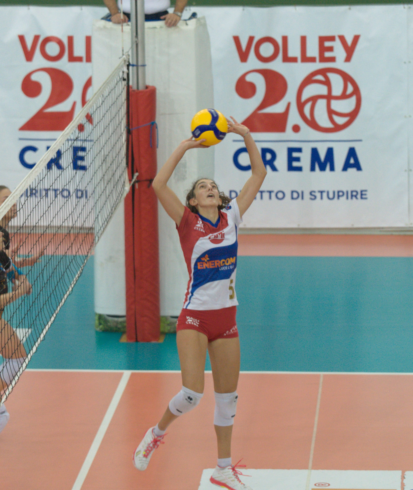
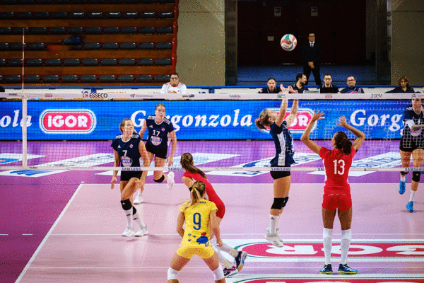

Battuta
È il colpo che mette in gioco la palla, inviandola al campo avversario. Ci sono diversi tipi di battute, che siano esse dall'alto o dal basso. La Federazione italiana pallavolo, su consiglio dei tecnici delle nazionali giovanili, ha adottato la battuta dal basso per i campionati allievi, allo scopo favorire le azioni di gioco. Anche se la battuta dal basso risulta essere di più facile apprendimento, non avendo le caratteristiche di offensività, deve essere abbandonata non appena si è in grado di eseguire i servizi più insidiosi.
Bagher
In genere, il bagher viene utilizzato quando la palla si presenta bassa, sotto la linea delle spalle.
Come nel palleggio, anche nel bagher dobbiamo considerare una serie di aspetti
che determinano la miglior riuscita di questo fondamentale.
Tali aspetti sono rappresentati dalla traiettoria di arrivo della palla, dalla postura,
dalle posizioni degli arti inferiori e superiori e dalle tipologie di bagher.

Palleggio
Nella pallavolo il palleggio, o alzata, è il fondamentale usato da un giocatore che tocca la palla rapidamente per favorire la schiacciata di un altro giocatore.
Quasi tutte le buone schiacciate sono il risultato di un buon palleggio, ovvero uno che rispetta le regole della trattenuta, e che l'attaccante (il giocatore che effettua la schiacciata)
può prevedere e schiacciare facilmente.
Questo significa che l'alzata deve essere, soprattutto, costante nello stile. Il fondamentale in sé è semplice, ma può essere difficile da padroneggiare.

Schiacciata
È un colpo di attacco potente.
Muro
È un fondamentale di difesa che consiste nel bloccare la palla alzando le braccia sopra la rete.